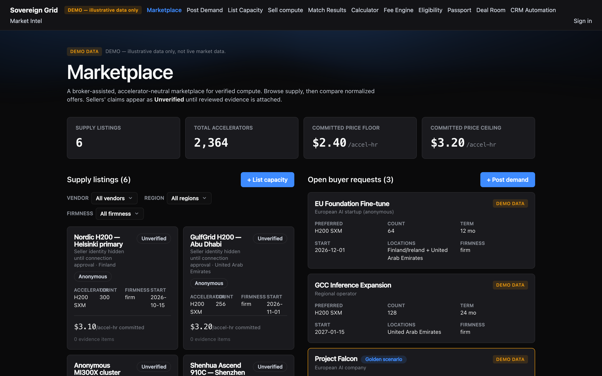
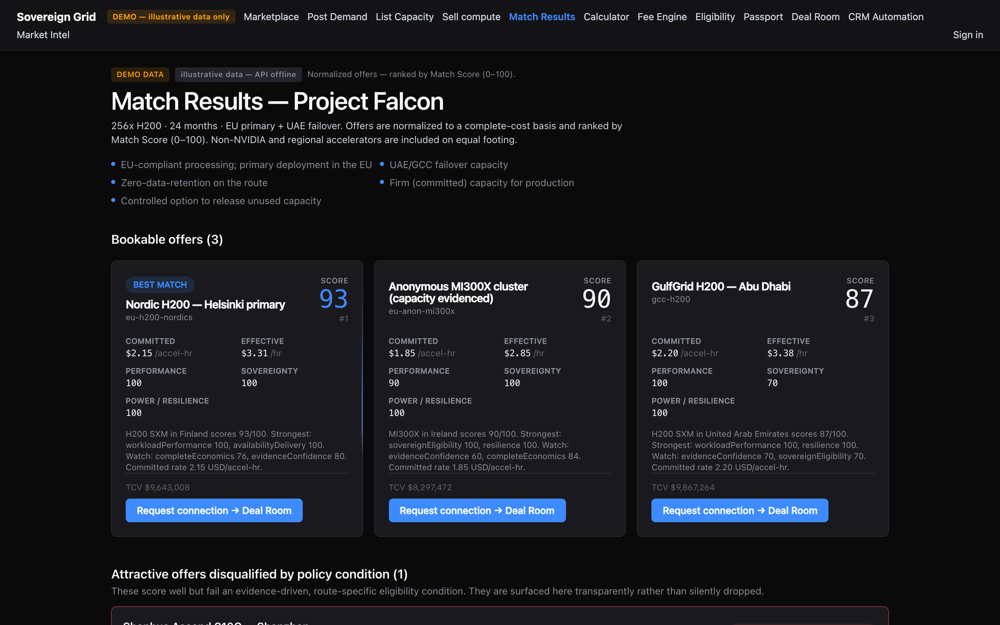

Sovereign Grid
A business-to-business marketplace for GPU compute capacity. Buyers post demand, the matching engine filters by region, accelerator and price, and deals run directly between counterparties with an operator review gate on supply. A market-intel engine ingests real pricing signals from live sources into an indicative index — never a "live market price," always dated, evidence-specific observations.
A real marketplace loop.
Everything below is running in production today — no mockups.
Post demand → ranked matches
Buyers specify region, accelerator, and budget; the engine ranks datacenter supply against hard filters, then scores what survives.
Seller onboarding + review gate
Providers submit listings that stay invisible until an operator approves them — supply quality is curated, not assumed.
Buyer→seller deals, atomic accept
Accept is a single atomic database operation: first accept wins, repeats are idempotent, and both parties are auto-linked into a deal room.
Signals, not vibes
Live ingest from vast.ai (datacenter SKUs only) feeds a three-level index: indicative public pricing, quoted partner offers, and anonymized transacted deals.
Evidence, not decoration.
Live captures from the production deployment.


Built like infrastructure.
The unglamorous parts done properly.
Row-level security by default
Postgres RLS on every table; public reads go through whitelisted security-definer views. Sellers can't see buyer identities; buyers can't see seller economics.
Audited state changes
Listing approvals, deal transitions and observation inserts are append-only audited. Accept is a SECURITY DEFINER function — no torn state.
313 checks, CI-enforced design law
Unit + integration + e2e suites gate every deploy; a design-law test suite fails any screen that drifts from the token system.
Zero-downtime deploys + DB watchdog
Continuous deployment to Render with an automated daily database-expiry watchdog and one-command restore runbook.
Where this goes next.
Shipped weekly; the moat compounds.
Signals pipeline (v1)
vast.ai ingest live on a 6-hour cadence; family taxonomy for aggregation across H100/A100/H200/B200/GB200/L40S.
AWS + Azure reference pricing
Both public pricing APIs verified reachable — hyperscaler reference rows will anchor the indicative index.
Transacted-level signal capture
Closed deals auto-record anonymized observations — proprietary price discovery no scraped source can replicate.
Trust bundle
Email verification, password reset, rate limiting and legal pages — clearing the path for first external counterparties.